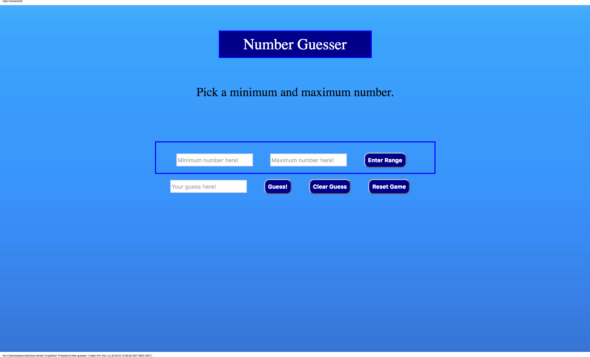
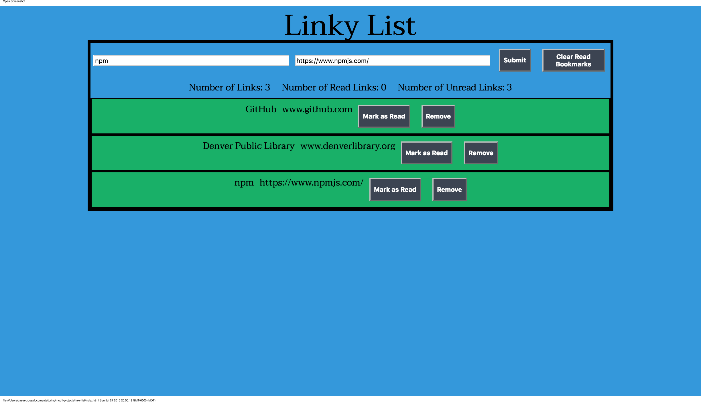
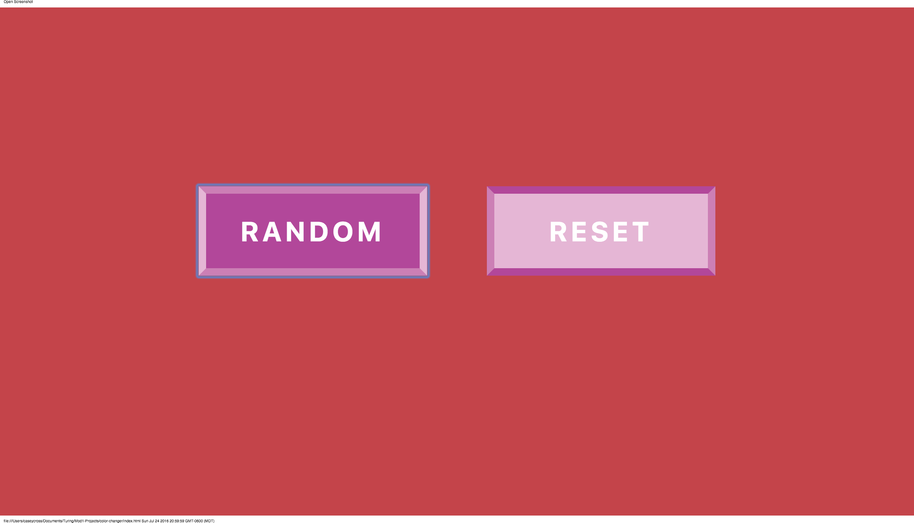
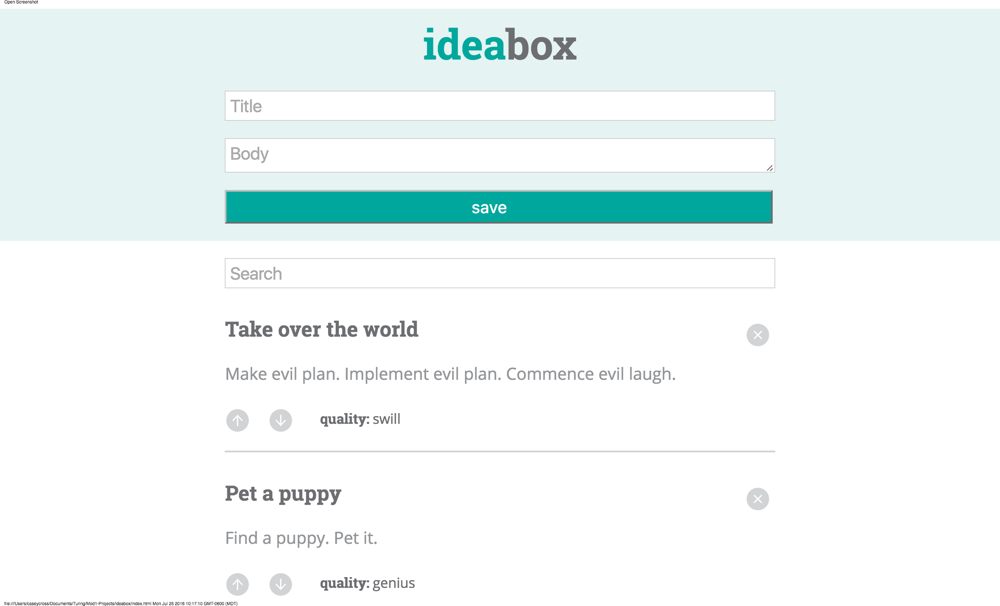
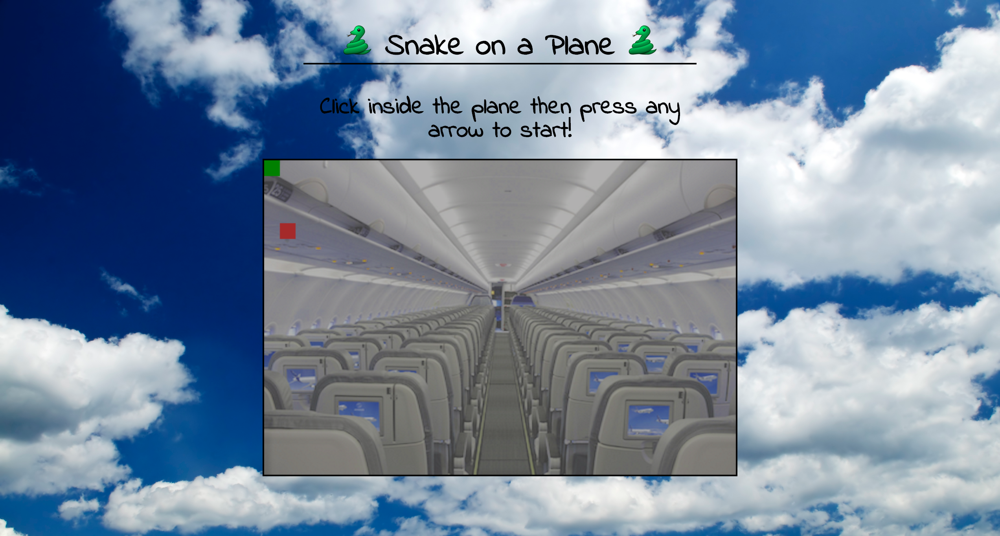

About Me
I am a front end developer living in gorgeous Denver, Colorado. I take pride in providing a clean, engaging, and interactive web experience for your users. I use the latest web technologies to ensure your site is useful and accessible. I am passionate about web development. I would like to use my skills for good, not evil. In my free time, I would like to help teach kids to code, especially kids who are underrepresented in the tech community, such as girls and minorities. I want to give them a leg up into an exciting future.I seek to join a team that encourages growth and collaboration.
When I'm not coding, you can find me camping, reading, watching football, or enjoying all of the cheeses.

Projects
Number Guesser Game
This number guessing game is one of my earliest projects as I was beginning to learn JavaScript. The computer chooses a random number and the player tries to guess that number within the specified range. The range automatically increases with each successive round.

This project was a collaboration between myself and Brett Hevia.
Here is the link to the work on GitHub.
Tools Used
Linky List
What is linky list, you ask? Why, it's a list of links! Are you tired of forgetting websites you want to visit? No more! Let this site do your remembering for you, freeing up precious brain space. This was my second project at Turing and my introduction to using jQuery.

This project was a collaboration between myself and Ben Godfrey.
Here is the link to the work on GitHub.
Tools Used
Color Changer
This is a fun little program, especially if you really respond to colors like I do. It reminds me of a remarkable exhibit called Mood Lighting I experienced at the Exploratorium in San Francisco. You place your head inside a large sphere that illuminates with varying colors which you can manually adjust. It was a unique immersive experience that invoked strong emotional reactions. You can check that out here.

This project was completed independently.
Here is the link to the work on GitHub.
Tools Used
Idea Box
This is a site that will store all of your ideas into localStorage.

This project was a collaboration between myself and Kyle Misencik.
Here is the link to the work on GitHub.
Tools Used
Snake on a Plane
This is a version of the classic game Snake but with a fun nod to the cheese-tastic movie "Snakes on a Plane".

This project was a collaboration between myself and Paul Nguyen.
Here is the link to the work on GitHub.
Tools Used

 Twitter
Twitter LinkedIn
LinkedIn Email
Email GitHub
GitHub